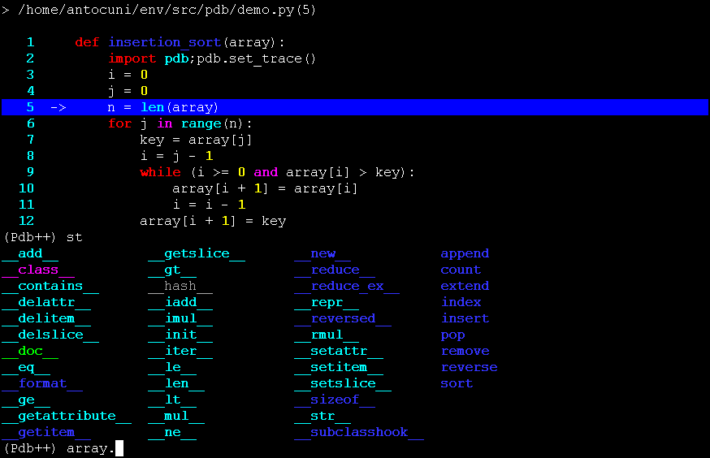

pdbpp 0.8.3
pdb++, a drop-in replacement for pdb
pdb++, a drop-in replacement for pdb
What is it?
This module is an extension of the pdb module of the standard library. It is meant to be fully compatible with its predecessor, yet it introduces a number of new features to make your debugging experience as nice as possible.
pdb++ features include:
- colorful TAB completion of Python expressions (through fancycompleter)
- optional syntax highlighting of code listings (through pygments)
- sticky mode
- several new commands to be used from the interactive (Pdb++) prompt
- smart command parsing (hint: have you ever typed r or c at the prompt to print the value of some variable?)
- additional convenience functions in the pdb module, to be used from your program
pdb++ is meant to be a drop-in replacement for pdb. If you find some unexpected behavior, please report it as a bug.
Installation
Since pdb++ is not a valid identifier for pip and easy_install, you have to install pdbpp instead:
$ pip install pdbpp -- OR -- $ easy_install pdbpp
Alternatively, you can just put pdb.py somewhere inside your PYTHONPATH.
Note that the module is called pdb.py so that pdb++ will automatically be used in all places that do import pdb (e.g., py.test --pdb will give you a pdb++ prompt). The old pdb module is still available by doing e.g. import pdb; pdb.pdb.set_trace()
New interactive commands
The following are new commands that you can use from the interative (Pdb++) prompt.
- sticky [start end]
- Toggle sticky mode. When in this mode, every time the current position changes, the screen is repainted and the whole function shown. Thus, when doing step-by-step execution you can easily follow the flow of the execution. If start and end are given, sticky mode is enabled and only lines within that range (extremes included) will be displayed.
- longlist (ll)
- List source code for the current function. Different from the normal pdb list command, longlist displays the whole function. The current line is marked with ->. In case of post-mortem debugging, the line which actually raised the exception is marked with >>. If the highlight config option is set and pygments is installed, the source code is highlighted.
- interact
- Start an interative interpreter whose global namespace contains all the names found in the current scope.
- track EXPRESSION
- Display a graph showing which objects are the value of the expression refers to and are referred by. This command requires the pypy source code to be importable.
- display EXPRESSION
- Add an expression to the display list; expressions in this list are evaluated at each step, and printed every time its value changes. WARNING: since these expressions are evaluated multiple times, make sure not to put expressions with side-effects in the display list.
- undisplay EXPRESSION:
- Remove EXPRESSION from the display list.
- source EXPRESSION
- Show the source code for the given function/method/class.
- edit EXPRESSION
- Open the editor in the right position to edit the given function/method/class. The editor used is specified in a config option.
- hf_unhide, hf_hide, hf_list
- Some frames might be marked as “hidden” by e.g. using the @pdb.hideframe function decorator. By default, hidden frames are not shown in the stack trace, and cannot be reached using up and down. You can use hf_unhide to tell pdb to ignore the hidden status (i.e., to treat hidden frames as normal ones), and hf_hide to hide them again. hf_list prints a list of hidden frames.
Smart command parsing
By default, pdb tries hard to interpret what you enter at the command prompt as one of its builtin commands. However, this is inconvenient if you want to just print the value of a local variable which happens to have the same name as one of the commands. E.g.:
(Pdb) list 1 2 def fn(): 3 c = 42 4 import pdb;pdb.set_trace() 5 -> return c (Pdb) c
In the example above, instead of printing 42 pdb interprets the input as the command continue, and then you loose your prompt. It’s even worse than that, because it happens even if you type e.g. c.__class__.
pdb++ fixes this unfriendly (from the author’s point of view, of course :-)) behavior by always prefering variable in scope, if it exists. If you really want to execute the corresponding command, you can prefix it with !!. Thus, the example above becomes:
(Pdb++) list 1 2 def fn(): 3 c = 42 4 import pdb;pdb.set_trace() 5 -> return c (Pdb++) c 42 (Pdb++) !!c
Note that the “smart” behavior takes place only when there is ambiguity, i.e. if there exists a variable with the same name as a command: in all other cases, everything works as usual.
Additional functions in the pdb module
The pdb module that comes with pdb++ includes all the functions and classes that are in the module from the standard library. If you find any difference, please report it as a bug.
In addition, there are some new convenience functions that are unique to pdb++.
- pdb.xpm()
- eXtended Post Mortem: it is equivalent to pdb.post_mortem(sys.exc_info()[2]). If used inside an except clause, it will start a post-mortem pdb prompt from the line that raised the exception being caught.
- pdb.disable()
- Disable pdb.set_trace(): any subsequent call to it will be ignored.
- pdb.enable()
- Re-enable pdb.set_trace(), in case it was disabled by pdb.disable().
- @pdb.hideframe
- A function decorator that tells pdb++ to hide the frame corresponding to the function. Hidden frames do not show up when using interactive commands such as up, down or where, unless hf_unhide is invoked.
@pdb.break_on_setattr(attrname, condition=always)
class decorator: break the execution of program every time the attribute attrname is set on any instance of the class. condition is a callable that takes the target object of the setattr and the actual value; by default, it breaks every time the attribute is set. E.g.:
@break_on_setattr('bar') class Foo(object): pass f = Foo() f.bar = 42 # the program breaks hereIf can be used even after the class has already been created, e.g. if we want to break when some attribute of a particular object is set:
class Foo(object): pass a = Foo() b = Foo() def break_if_a(obj, value): return obj is a break_on_setattr('bar', condition=break_if_a)(Foo) b.bar = 10 # no break a.bar = 42 # the program breaks here
Configuration and customization
To customize pdb++, you can put a file named .pdbrc.py in your home directory. The file must contain a class named Config inheriting from pdb.DefaultConfig and override the desired values.
The following is a list of the options you can customize, together with their default value:
- prompt = '(Pdb++) '
- The prompt to show when in interactive mode.
- highlight = True
- Highlight line numbers and the current line when showing the longlist of a function or when in sticky mode.
- encoding = 'utf-8'
- File encoding. Useful when there are international characters in your string literals or comments.
- sticky_by_default = False
- Determine whether pdb++ starts in sticky mode or not.
- line_number_color = Color.turquoise
- The color to use for line numbers.
- filename_color = Color.yellow
- The color to use for file names when printing the stack entries.
- current_line_color = 44
- The background color to use to highlight the current line; the background color is set by using the ANSI escape sequence ^[Xm where ^ is the ESC character and X is the background color. 44 corresponds to “blue”.
- use_pygments = True
- If pygments is installed and highlight == True, apply syntax highlight to the source code when showing the longlist of a function or when in sticky mode.
- bg = 'dark'
- Passed directly to the pygments.formatters.TerminalFormatter constructor. Selects the color scheme to use, depending on the background color of your terminal. If you have a light background color, try to set it to 'light'.
- colorscheme = None
- Passed directly to the pygments.formatters.TerminalFormatter constructor. It expects a dictionary that maps token types to (lightbg, darkbg) color names or None (default: None = use builtin colorscheme).
- editor = '${EDITOR:-vi}'
- The command to invoke when using the edit command. By default, it uses $EDITOR if set, else vi. The command must support the standard notation COMMAND +n filename to open filename at line n. emacs and vi are known to support this.
- truncate_long_lines = True
- Truncate lines which exceed the terminal width.
- exec_if_unfocused = None
- Shell command to execute when starting the pdb prompt and the terminal window is not focused. Useful to e.g. play a sound to alert the user that the execution of the program stopped. It requires the wmctrl module.
- disable_pytest_capturing = True
- Old versions of py.test crash when you execute pdb.set_trace() in a test, but the standard output is captured (i.e., without the -s option, which is the default behavior). When this option is on, the stdout capturing is automatically disabled before showing the interactive prompt.
- def setup(self, pdb): pass
- This method is called during the initialization of the Pdb class. Useful to do complex setup.
CHANGELOG
Changes between 0.8.2 and 0.8.3
Changes between 0.8.1 and 0.8.2
- fix wheel packaging; see
https://bitbucket.org/antocuni/pdb/pull-request/38/support-pip-install-and-wheels-natively/diff
Changes between 0.8 and 0.8.1
- fix issue 37: Doesn’t install on OS X
- Removed dependency on backports.inspect
- Made dependency on funcsigs optional.
- (https://bitbucket.org/antocuni/pdb/issue/37/doesn-t-install-on-os-x)
- (https://bitbucket.org/antocuni/pdb/pull-request/35/use-funcsigs-package-instead-of/diff)
Changes between 0.7.2 and 0.8
- Python 3 compatibility
- Optional support for 256 color formatting by setting use_terminal256formatter = True in ~/.pdbrc.py (https://bitbucket.org/antocuni/pdb/pull-request/30)
- Make set_trace() in same program remember previous state (https://bitbucket.org/antocuni/pdb/pull-request/33)
- Append ? and ?? to callable to get info a la IPython (https://bitbucket.org/antocuni/pdb/pull-request/25)
- Don’t treat lines like r = 5 or c = 6 as commands (https://bitbucket.org/antocuni/pdb/pull-request/11)
- fix issue 20: support argument-free post mortem
Changes between 0.7.1 and 0.7.2
- don’t crash with newer versions of py.test
Changes between 0.7 and 0.7.1
- The pp (pretty print) command now uses the actual width of the terminal, instead of hardcoding 80 columns
- py.test and unittest internal frames are hidden by default (type help hidden_frames for more info)
- don’t crash if py is installed but py.test is not
| File | Type | Py Version | Uploaded on | Size | |
|---|---|---|---|---|---|
| pdbpp-0.8.3-py2-none-any.whl (md5) | Python Wheel | 2.7 | 2015-09-17 | 22KB | |
| pdbpp-0.8.3.tar.gz (md5) | Source | 2015-09-17 | 39KB | ||
- Author: Antonio Cuni
- Home Page: http://bitbucket.org/antocuni/pdb
- Keywords: pdb debugger tab color completion
- License: BSD
- Platform: unix,linux,osx,cygwin,win32
-
Categories
- Development Status :: 4 - Beta
- Environment :: Console
- Intended Audience :: Developers
- License :: OSI Approved :: BSD License
- Operating System :: POSIX
- Programming Language :: Python
- Programming Language :: Python :: 2
- Programming Language :: Python :: 2.6
- Programming Language :: Python :: 2.7
- Programming Language :: Python :: 3
- Programming Language :: Python :: 3.2
- Programming Language :: Python :: 3.3
- Programming Language :: Python :: 3.4
- Programming Language :: Python :: Implementation :: CPython
- Programming Language :: Python :: Implementation :: PyPy
- Topic :: Utilities
- Package Index Owner: antocuni, msabramo
- Package Index Maintainer: msabramo
- DOAP record: pdbpp-0.8.3.xml